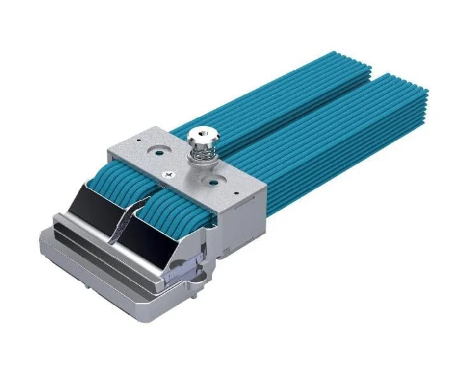
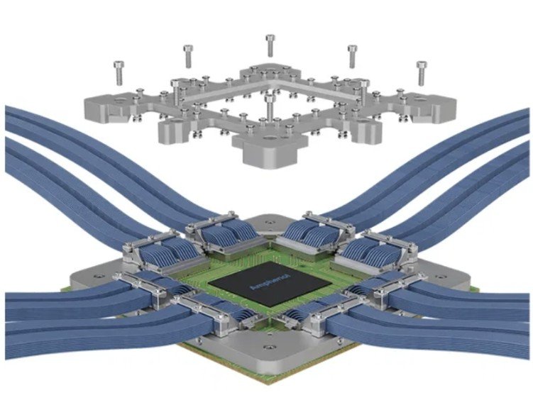
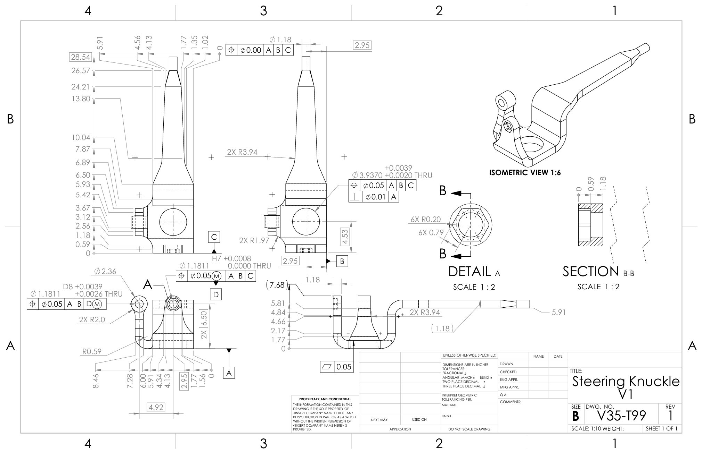
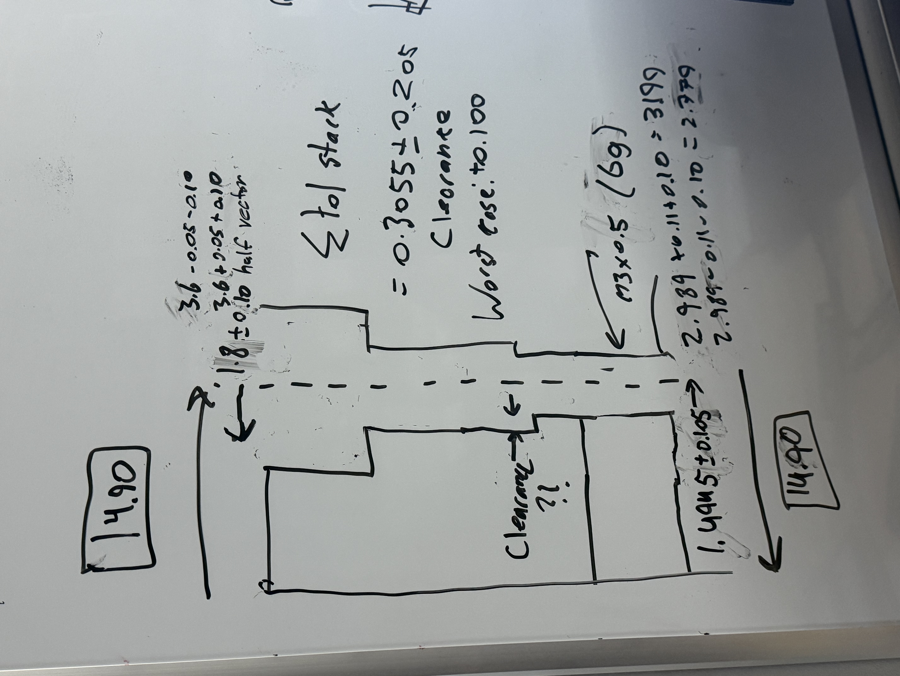
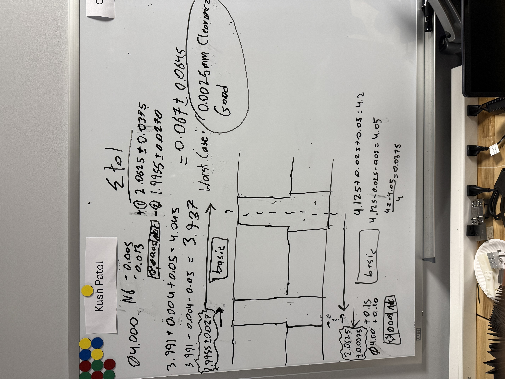

Heads up: Most of my work here is under NDA, so I can't show the actual mechanism designs, simulation results, or product details. To show the skills I picked up, I'm using work from a personal project (double wishbone suspension) that uses the same GD&T, drawing, and tolerance analysis methods I used every day at Amphenol. The actual internship work was much more sophisticated than what's shown here.
What I learned
- Design intent before CAD. Every dimension should have a reason.
- GD&T communicates with machinists. It tells them what actually matters and what they can loosen up.
- Worst-case vs RSS. Prototypes get worst-case. Production gets RSS.
- Run FEA and physical tests together. When they match, you know you can trust the model.
- Spending time on the shop floor every day taught me more about design than any class could.
The Product
The XtremeSPEED HSIO platform is built for high bandwidth connections in data centers and AI systems. I worked on the XtremePASS standard, a midplane bypass connector running at 112+ Gbps PAM4. At those speeds, mechanical tolerances directly affect signal quality.

XtremePASS 8×8×2 system, midplane bypass connector

HSIO connector, high-density differential pair routing
If something is off by less than a millimeter, you get impedance problems and signal loss.
GD&T and Drawing Practice
I can't show the connector drawings I made at Amphenol, so here's a steering knuckle I drew for a personal double wishbone suspension project. It uses the same GD&T callouts, datum setup, and drawing standards I used at work every day: positional tolerances, true position on hole patterns, and perpendicularity controls tied to functional datums.

- Datum structure based on assembly requirements
- Positional tolerances
- Perpendicularity on critcal interfaces (wheel hub external feature)
- Realistic tolerances, without over-constraining
Tolerance Stack-Up Analysis
For prototypes, I use worst-case arithmetic. If it fits at worst-case, it fits. Done. For production, RSS makes more sense since it's really unlikely that every single tolerance hits its worst value at the same time.
Here are two hand-drawn worst-case loop analyses from the same suspension project:


Hand-drawn tolerance loops with worst-case sums to check clearance on two different features.
FEA and DFM
No design change went out based on CAD alone. For anything with contact forces or deflection, I ran ANSYS Static FEA. I compared FEA results to physical test data or hand calculations. When they lined up, the model was good enough to trust for future iterations.
DFM was part of the whole process: loosening tolerances on features that didn't need to be tight, standardizing fastener specs to cut down on tool changes, and adjusting radii for the machining process we were using. I walked every drawing through the machinists before releasing it. That caught most of the problems before they turned into scrapped parts.
Impact
The products I worked on go into hyperscale AI systems, cloud data centers, and high-performance networking gear. Some of the development work I contributed to is being prepared for international marketing. Working in that pipeline, even as a junior contributor, feels pretty great.